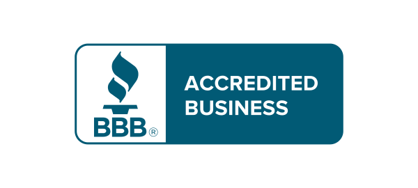
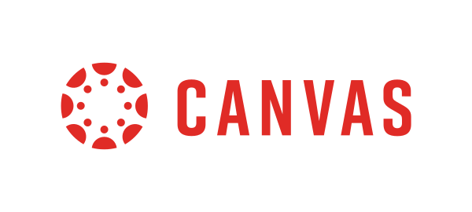

Plagiarism Checker
Find matching passages and sources, review similarity in context, and see citations and references in a clear report.
150 words free — no registration required.

See the evidence behind every match
A similarity score is only the starting point. Open a highlighted passage to see the matching source and its context, then review citations, references, and other report signals before deciding how the match should be interpreted.
Climate change and the economics of food
The economic implications of climate change extend beyond environmental damage and touch every part of modern agricultural systems.
Recent studies have shown that rising global temperatures correlate with decreased yields in rain-fed regions, and that the effect compounds where irrigation is unavailable.
However, smallholder farmers in West Africa have adapted through diversified cropping patterns and drought-resistant millet varieties.
What the models leave out
Most projections treat adaptation as a fixed parameter rather than a decision made season by season under uncertainty.
Field data from recent seasons supports this reading across tropical zones, though the sample remains too small to generalise from with confidence.
Further work should separate the price effect from the yield effect before either is used to guide policy.
Report information
Plagiarism
Total AI rate
AI probability
- Climate volatility and agriculture vulnerability nature.com/nclimate/vol-13 31.6%
- Adaptation strategies in West African smallholding cambridge.org/agricultural-economics 6.6%
- Rain-fed yield variance under warming scenarios sciencedirect.com/agsy/2024 4.1%
- Millet cultivars and drought tolerance trials fao.org/publications/cb9241 2.8%
- Smallholder decision-making under uncertainty jstor.org/stable/48729103 1.9%
- Price transmission in West African grain markets ifpri.org/publication/gm-2023 1.2%
PlagiarismSearch surfaces matching text and sources for review. It does not make the final plagiarism judgment for you.
- API
Control what your plagiarism check includes
Choose the source collections and exclusions that fit your document before you interpret the result. Search the web, academic databases, your storage, or organization storage, and exclude references or in-text citations when appropriate.
- Web
- Academic databases
- My storage
- Organization storage
- Exclude references
- Exclude in-text citations
- Character normalization
- Add to storage
When academic database search is enabled, PlagiarismSearch can search over 500 million indexed academic texts.
Plagiarism and AI checks answer different questions
Finds text that matches available sources and shows where those matches come from, so you can review similarity and citation context.
Provides a separate AI-writing indicator for the text you choose to analyze. It does not replace source matching and does not prove authorship.
You can run plagiarism checking on its own or add AI writing analysis in the same check. AI-generated text is not automatically plagiarism, and low similarity does not prove that a text was written by a human.
Know what happens to your document
Your document is processed to perform the checks you select. The file you upload is not retained as a stored source document, while a generated report may remain in your account for convenient access.
-
01
Upload & process
Your document is processed for the checks you select.
-
02
Source document
The uploaded file is not retained as a stored source document.
-
03
Report
Your generated report may remain in your account for convenient access.
-
04
Delete
You can permanently delete reports from your account.
If you choose Add to storage, that is a separate action you control.
AI checks are processed on PlagiarismSearch infrastructure.
Use PlagiarismSearch in the workflow you already have
Check a document in the web app, bring plagiarism checking into Moodle or Canvas, work from Google Docs, or connect your own system through the API.
Moodle
Run plagiarism checks where Moodle courses and submissions already live. Keep report access, source settings, and citation/reference exclusions inside the LMS workflow.
API
Connect plagiarism checking to your own product, platform, or internal workflow through the PlagiarismSearch API.
Google Docs
Use the PlagiarismSearch add-on from your Google Docs workflow when you want to check document text without switching to the main web form.

Canvas
Bring plagiarism checking into Canvas course workflows through a full LMS integration, with the same core role as the Moodle integration.
For individual checks, education, and teams
Start with a single document, or use PlagiarismSearch across organization and LMS workflows when more people need shared access, storage, or administration.
Students & individual users
Check essays, papers, assignments, presentations, and other documents before submission. Review matched passages, sources, citations, and references in one report.
Education & Institutions
Bring plagiarism checking into institutional workflows with Moodle and Canvas, organization management, shared storage, and member permissions.
Business & Teams
Invite team members, manage permissions, share organization storage, and connect plagiarism checking through the API when needed.
What users say about PlagiarismSearch
Sample text at the length a two-line review occupies, so the measure and leading can be judged before real quotes arrive.
Sample text at the length a three-line review occupies. Cards stretch to the tallest in view, so a short quote and a long one still align at the foot.
Sample text at the length a two-line review occupies, so the measure and leading can be judged before real quotes arrive.
A fourth and fifth slot exist only so the carousel has something to scroll to. They leave with the rest of the sample text.
Sample text at the length a two-line review occupies, so the measure and leading can be judged before real quotes arrive.
Approved source pool: Trustpilot · SmartCustomer · G2 · owned testimonials
Choose a one-time plan
Need more than the free check? Choose a one-time plan, or compare all available pricing options.
Plagiarism Checker FAQ
PlagiarismSearch compares the text you submit with the source collections enabled for your check and highlights matching or similar passages in the report. Depending on your settings, the check can include web sources, academic databases, personal storage, or organization storage. The report gives you evidence to review rather than an automatic plagiarism verdict.
No. Similarity means that some text matches or closely resembles text found in the sources checked. A match can come from a quotation, reference, common phrasing, or material that needs closer review, so source context and citation information matter.
Depending on your settings and access, the checker can search web sources, academic databases, personal storage, and organization storage. When academic database search is enabled, PlagiarismSearch can search over 500 million indexed academic texts. Not every source collection is necessarily included in every check.
Yes. The checker includes settings to exclude references and in-text citations when appropriate. Because exclusions change what is checked and reported, review your settings before interpreting the result.
Uploaded source documents are not retained as documents after processing. Generated reports may remain in your account for convenience, and you can permanently delete them. If you choose Add to storage, that is a separate action you control.
Yes. Keep Check for plagiarism on and optionally add Check for AI writing. The two analyses answer different questions: plagiarism checking looks for source matches and similarity, while AI detection provides a separate AI-writing indicator. An AI result does not by itself mean plagiarism or prove authorship.
PlagiarismSearch supports plagiarism checking in 80+ languages.
The checker accepts common file types such as DOC/DOCX, PDF, TXT, PPT/PPTX, and XLS/XLSX, along with other supported document formats. The uploader shows the formats accepted by the current checker.
Yes. You can check up to 150 words for plagiarism without registering.
Check your text for plagiarism
Paste your text or upload a document to review matching passages and sources in a clear report.
150 words free — no registration required.